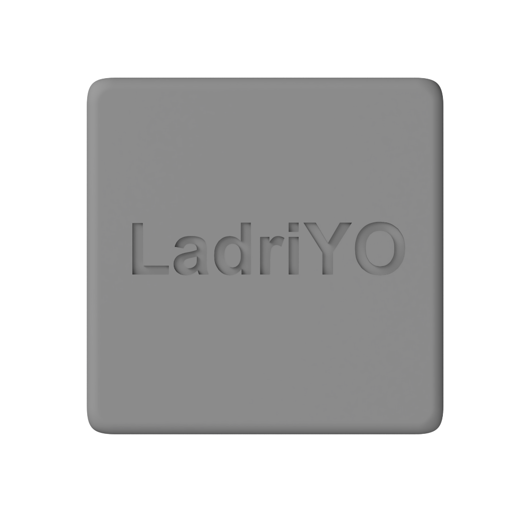

El Producto
Diseñado y fabricado en Argentina con atención al detalle.


Diseño Minimalista
Carcasa con patrón de ladrillos en relieve, esquinas redondeadas y acabado premium. Un objeto que querés tener en tu escritorio.
Tecnología NFC
Utiliza la mejor tecnología NFC para una conexión instantánea y confiable con tu smartphone.
Hecho en Argentina
Producto nacional de alta calidad, diseñado y fabricado localmente con pasión por el detalle.
💚 Querés tu LadriYO?
Contactanos para obtener tu dispositivo y empezar a recuperar el control de tu tiempo.